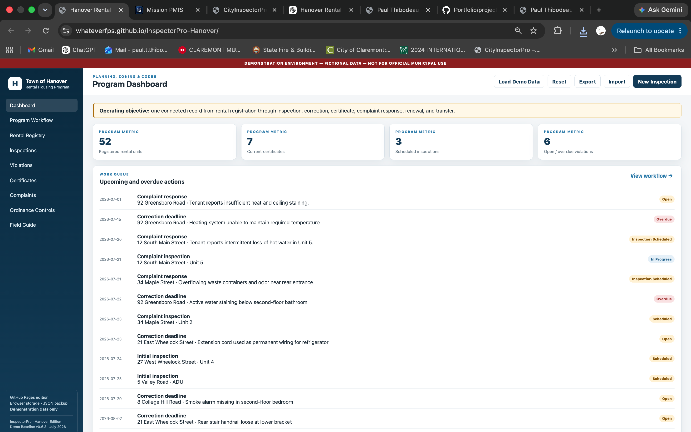
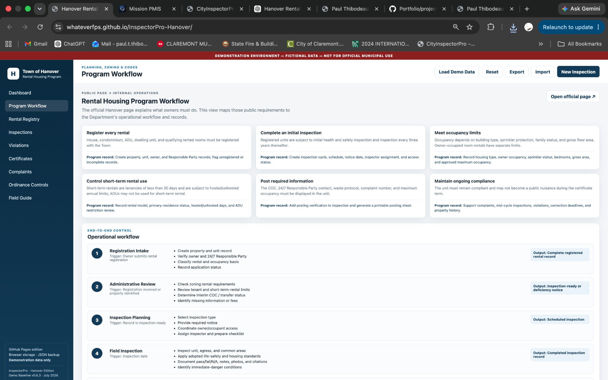
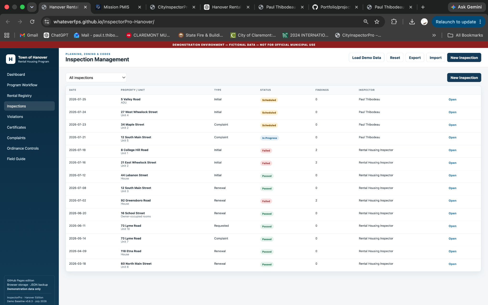
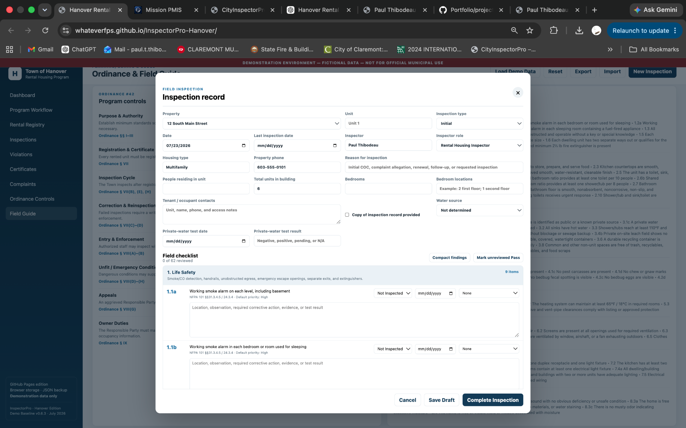
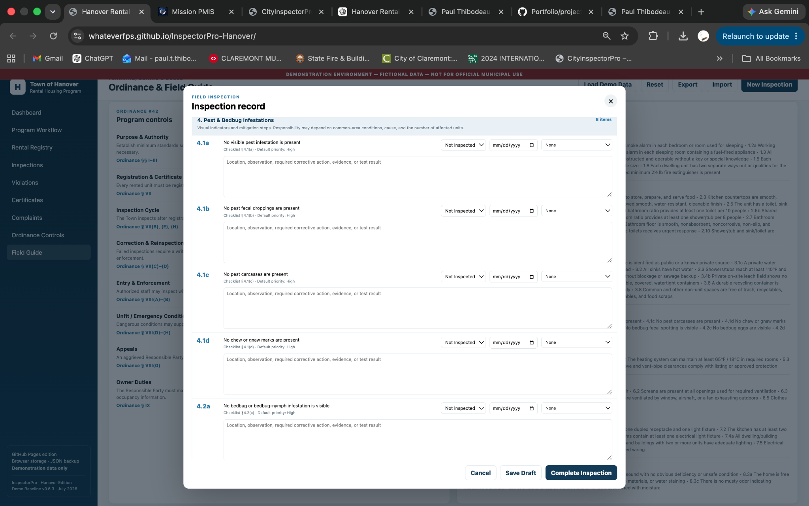
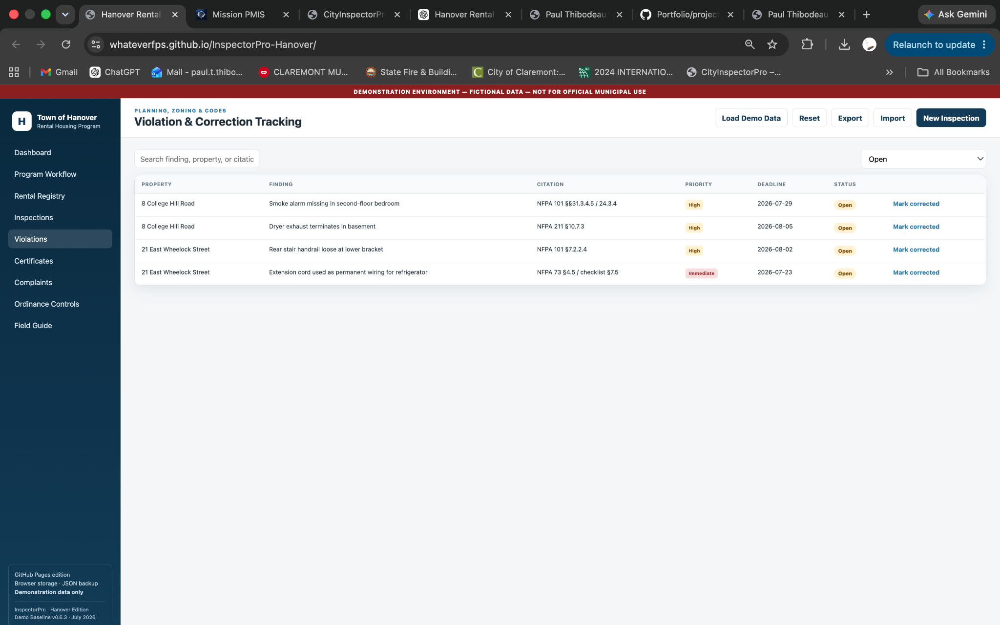
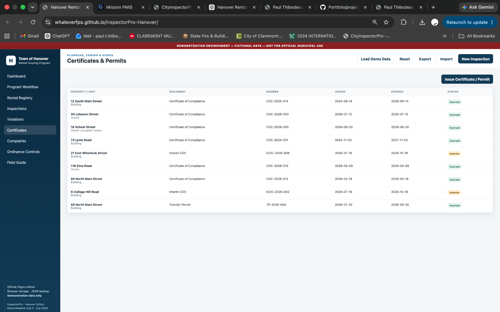
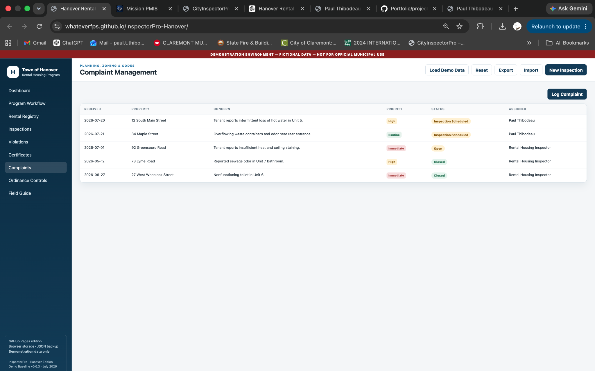
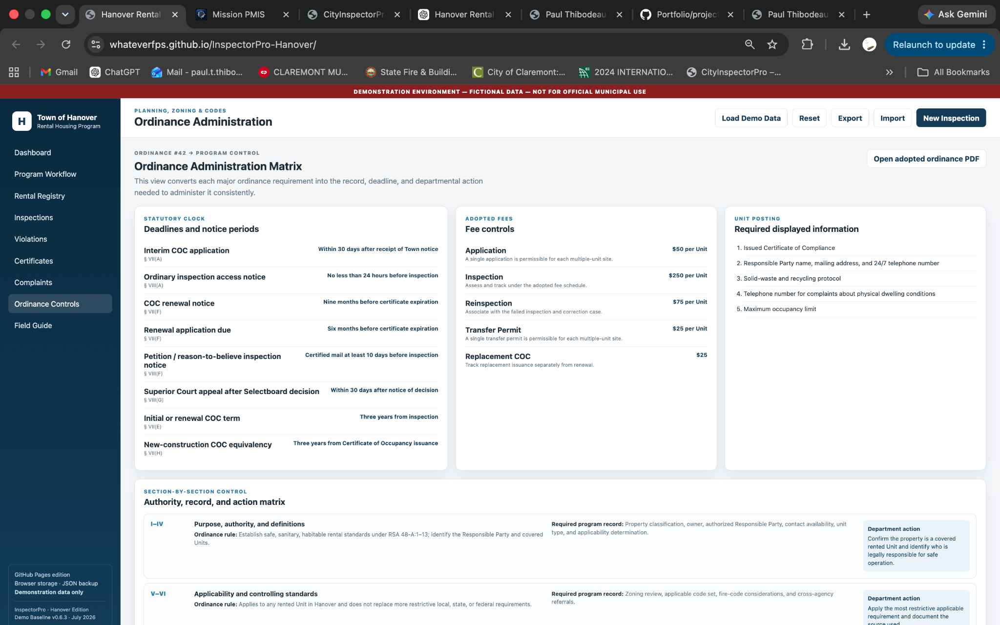

Municipal Technology
Hanover InspectorPro
A browser-based municipal rental housing inspection operations platform that converts ordinance requirements into a connected system for registration, inspections, complaints, violations, certificates, and program control.

Project Overview
Built around the full municipal inspection lifecycle.
InspectorPro moves beyond a standalone inspection form. It connects the property record, responsible party, inspection cycle, complaints, findings, correction deadlines, certificates, and ordinance controls into one operating model. The platform was designed from the inspector's actual decisions and the department's administrative responsibilities.
The Challenge
Translate a public ordinance into an internal operating system.
Rental housing inspection is not a single event. It depends on accurate records, statutory notice periods, access requirements, inspection standards, correction tracking, certificate control, complaint response, and defensible enforcement history.
The design challenge was to preserve that regulatory structure while making the daily work easier to understand, perform, and manage.
The Solution
Organize the work around one connected lifecycle.
The system treats each property and unit as the center of a continuous record. Registration creates the operating record; administrative review establishes applicability; inspection planning controls timing and notice; field inspection captures evidence; failed items become correction work; and successful outcomes support certificates and continuing compliance.
Platform Walkthrough
The application itself is the case study.

01 · Program Workflow
Public requirements mapped to internal operations.
The workflow view connects what property owners must do with the records, reviews, notices, inspections, and departmental outputs required to administer the program consistently.

02 · Inspection Management
One queue for every inspection type and status.
Initial, renewal, complaint, requested, scheduled, in-progress, passed, and failed inspections remain visible with property, unit, inspector, findings, and direct record access.

03 · Field Inspection
A complete inspection record, not a detached checklist.
Property and unit details, inspection type, reason, occupancy information, water source, tenant contacts, and the field checklist are captured within the same record.

04 · Structured Findings
Each requirement can produce a documented, prioritized finding.
Checklist items include status, date, priority, observations, corrective action, evidence, and test results so inspection findings can move directly into correction tracking.

05 · Violations
Failed conditions become controlled corrective work.
The violation register connects findings to the property, citation, priority, deadline, status, and correction action instead of allowing failed items to disappear into narrative notes.

06 · Certificates & Permits
Certificate status remains connected to inspection outcomes.
Certificates of Compliance, Interim Certificates, and Transfer Permits are tracked by property, number, issuance, expiration, and current status.

07 · Complaints
Complaint intake becomes actionable inspection work.
Received date, property, concern, priority, status, and assignment remain visible so reported conditions can be routed, inspected, corrected, and closed.

08 · Ordinance Administration
The governing rules stay visible inside the system.
Statutory clocks, adopted fees, required postings, program records, and department actions translate ordinance language into repeatable administrative controls.
09 · Field Guide
Inspectors can work from the governing standard.
The field guide places program controls and inspection sections together, helping staff understand both the authority behind the program and the conditions they are evaluating.
Platform Capabilities
A complete operational concept.
Rental Registry
Property, unit, owner, responsible-party, occupancy, contact, and registration records.
Inspection Operations
Scheduling, notices, assignments, field records, checklists, findings, and outcomes.
Correction Control
Violations, citations, priorities, deadlines, reinspections, and correction status.
Certificate Management
Certificate type, number, issue date, expiration, status, and property coverage.
Complaint Response
Intake, triage, assignment, inspection scheduling, response, and closure.
Administrative Controls
Notice periods, adopted fees, postings, authority, records, and department actions.
Technology
A lightweight deployable browser application.
The demonstration can be reviewed and operated without specialized infrastructure while still presenting a coherent, application-style user experience.
HTML5CSS3JavaScriptGitHub PagesBrowser StorageJSON Import / ExportResponsive UIAI-Assisted Development
What This Demonstrates
Solutions engineering grounded in real operations.
Domain Analysis
Converting ordinance language, statutory timing, and inspection responsibilities into product logic.
Information Architecture
Connecting properties, people, inspections, complaints, findings, deadlines, and certificates.
Workflow Engineering
Designing the process from registration intake through ongoing compliance and enforcement.
Interface Design
Making detailed municipal records understandable to inspectors, administrators, and leadership.
Rapid Product Development
Moving from operational problem to a polished, functioning browser-based prototype.
Stakeholder Communication
Using a tangible system to make process change, requirements, and product direction easier to evaluate.
Why It Matters
Hanover InspectorPro demonstrates my ability to enter a complex operating environment, understand its governing rules and daily decisions, and convert that knowledge into a coherent software product. The value is not only in the interface. It is in the operational model underneath it.